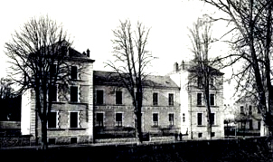
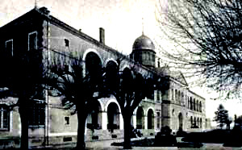
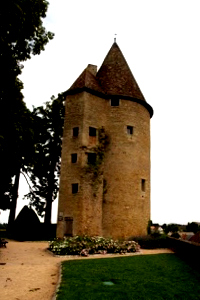
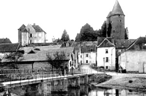
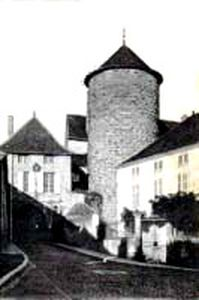
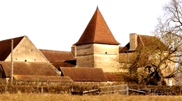
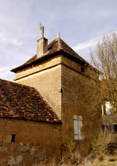

Recensement Jean-Claude Truffet
| Département | 71 — Saône-et-Loire |
| Canton | Charolles |
| Commune | Charolles |
| Type d'édifice | Château |
| Période d'origine | XII-XVI |







CHAROLLES; siège d'une vicomté dépendant d'Autun au Xe siècle: rattachement au comté de Chalon. Le comte rend hommage en 1166 au roi Louis VII tout en se reconnaissant vassal du duc de Bourgogne, La forteresse entre dans le domaine ducal en 1237 lors de l'achat du comté de Chalon par Hugues IV, établissement d'un bailli. Charolles devient en 1277 la capitale et le siège des états particuliers du comté de Charolais, le comté regroupe six châtellenies et est inféodé à Béatrice de Bourgogne, nièce de Robert II de Bourgogne. La ville reçoit en 1301 sa charte de Robert de Clermont, époux de Béatrice de Bourgogne, par mariage, en 1327 le comté passe à la maison d'Armagnac en la personne de Jean Ier d'Armagnac. Bernard VII d'Armagnac, en 1391 petit-fils, ayant de pressants besoins d'argent, vend le comté à Philippe II de Bourgogne, la ville devient à nouveau le chef-lieu d'un bailliage
A la mort de Charles le Téméraire, en 1477 le comté est rattaché au royaume de France, de 1493 à 1684 restitution à la maison d'Autriche, le prince de Condé en 1684 se voit attribuer le comté en paiement des dettes contractées par les Habsbourg. Rattachement en 1751 aux États de Bourgogne, Louis XV achète en 1761 le comté à Mlle de Charolais et le réunit définitivement à la couronne.
Charolles était, à la veille de la Révolution, la 14e ville de la grande roue des États de Bourgogne, siège du bailliage royal de Charolles, de la maréchaussée et prévôté, du grenier à sel et de la subdélégation de Charolles. FONTENAY; Le château du XVIIe siècle est une propriété privée. La maison forte de Fontenay fut le centre d'un petit fief dont l'histoire reste assez obscure, en 1625 François de Charolles est titulaire du fief et en 1666, la seigneurie est aux mains de Pierre de Rimon.
Charolles. Vestiges du château féodal, la tour de Charles le Téméraire du XIVe siècle dominant la ville, la porte fortifiée encore visible dans ce château des comtes de Charolais est installée aujourd'hui la mairie. Château de Corcelles, demeure, 1er quart du XXe siècle, les structures porteuses et les couvertures du château le décor intérieur du grand hall et de la cage d' escalier avec son vitrail, de la salle à manger avec ses vitraux, le puits, les structures porteuses du pavillon d' entrée font parties de l'inscription par arrêté du 17 août 2005. Château construit de 1905 à 1908 par l'architecte Jean Boirivant.
Couvent des Ursulines (ancien), du 1er quart du XVIe siècle. Les façades et les toitures sur rue et sur cour, inscription par arrêté du 27 septembre 1948.
M.F. de Fontenay, il reste un gros pavillon carré à deux étages, flanqué sur sa façade ouest d'une tour d'escalier circulaire hors oeuvre à laquelle on accède par une porte rectangulaire encadrée par deux pilastres toscans portant un entablement décoré de triglyphes, au-dessus figure une cartouche dont les armoiries ont été bûchées.
Ce type de manoir, qui associe un gros bâtiment carré à une tour d'escalier ronde ou polygonale, est typique du sud du Charolais et de l'ouest du Mâconnais.
Famille de Pierre de Rimon
"
Château de Charolles, de Corcelles la tour, et le manoir de Fontenay